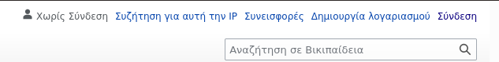
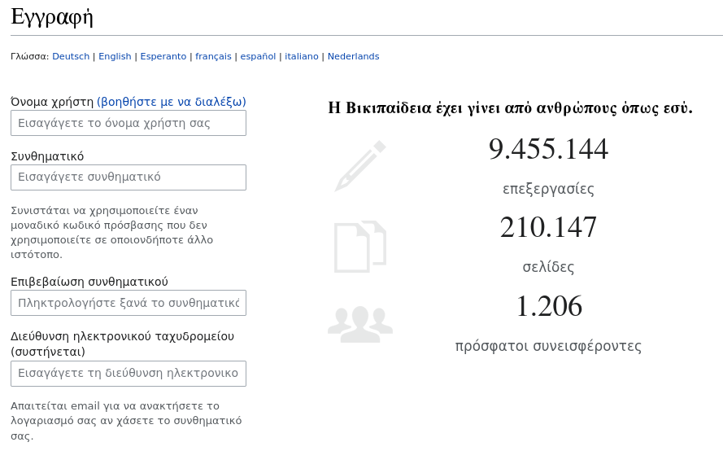
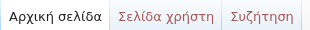

1. Πηγαίνουμε στην Ελληνική σελίδα της Wikipedia Wikipedia Greece
2. Επιλέγουμε στην πάνω μπάρα το κουμπί "Δημιουργία λογαριασμού" όπως φαίνεται στην εικόνα:
3. Βάζετε τα στοιχεία σας στην παρακάτω φόρμα:
4. Εφόσον έχουμε προσθέσει τα στοιχεία μας, επιλέγουμε "Δημιουργία λογαριασμού χρήστη"
5. Μετά από την επιτυχή εγραφή, μεταφερόμαστε στην αρχική σελίδα.
6. Στην φόρμα που βλέπετε μποστά σας μπορείτε είτε να την συμπλερώσετε, είτε να την παρακάμψετε!
7.Τέλος, πηγένετε στην σελίδα "Σελίδα χρήστη" όπως φαίνεται στην εικόνα:
8. Μπορείτε να προσθέσετε περιεχόμενο για τον εαφτό σας καθώς και τις παρακάτω γραμμές για να φανεί η συμμετοχή σας στο Ionian Wikithon Event
1. Συνδεόμαστε στον λογαριασμό σας
2. Μεταφερόμαστε στη σελίδα "Επεξεργασία κώδικα"
3. Και προσθέστε την ακόλουθη γραμμή
[[Βικιπαίδεια:Ionian Wikithon 2022|Ionian Wikithon 2022]]